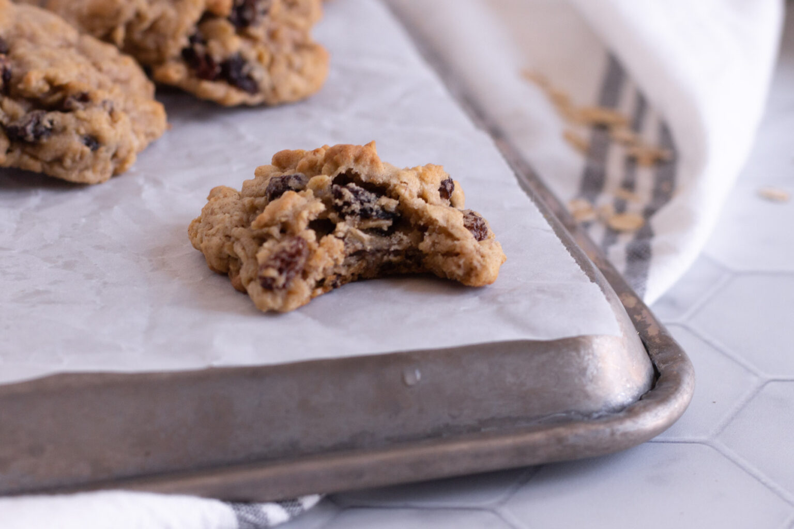

Oatmeal Raisin Cookies

These fluffy oat meal raisin cookies are made with vegetable shortening
instead of butter, resulting in a much lighter and fluffier cookie. They
come out like a hybrid between a cookie and a biscuit, resulting in a
texture similar to a warm scone.
Ingredients
- 1 C sugar
- 1 C shortening
- 2 eggs
- 2 C quick oatmeal
- 1 C milk
- 2 C flour
- 1.5 tsp baking powder
- 3 Tbsp vanilla extract
- 1 C raisings
Steps
- Blend together sugar, shortening, and eggs
- Add oatmeal and milk; mix well
- Add flour, baking powder, and vanilla; mix well
- Fold in raisins
- Drop by rounded tablespoon onto lightly greased cookie sheet
- Bake at 350 for 15 minutes or until lightly browned
- Remove from cookie sheet to a wire rack to cool